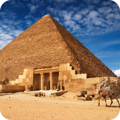
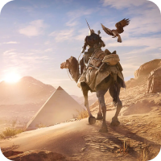

Antiguo Egipto

Una civilización misteriosa que floreció a orillas del río Nilo durante milenios. Con su rica historia, impresionante arquitectura y creencias religiosas únicas, el Antiguo Egipto dejó un legado perdurable que sigue cautivando a la humanidad hasta el día de hoy.
En el corazón del Antiguo Egipto se encontraban los faraones, gobernantes divinos que ejercían un poder absoluto sobre el pueblo egipcio. El panteón de dioses y diosas del Antiguo Egipto es vasto y lleno de mitos y leyendas. Explora las creencias religiosas que guiaron la vida cotidiana de los egipcios, desde el culto al sol de Ra hasta la sabiduría de Thot y la diosa protectora Isis.
